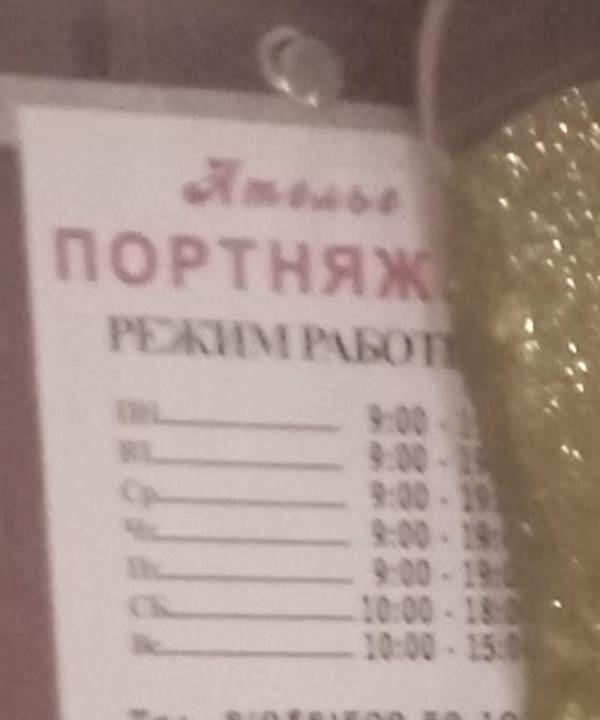
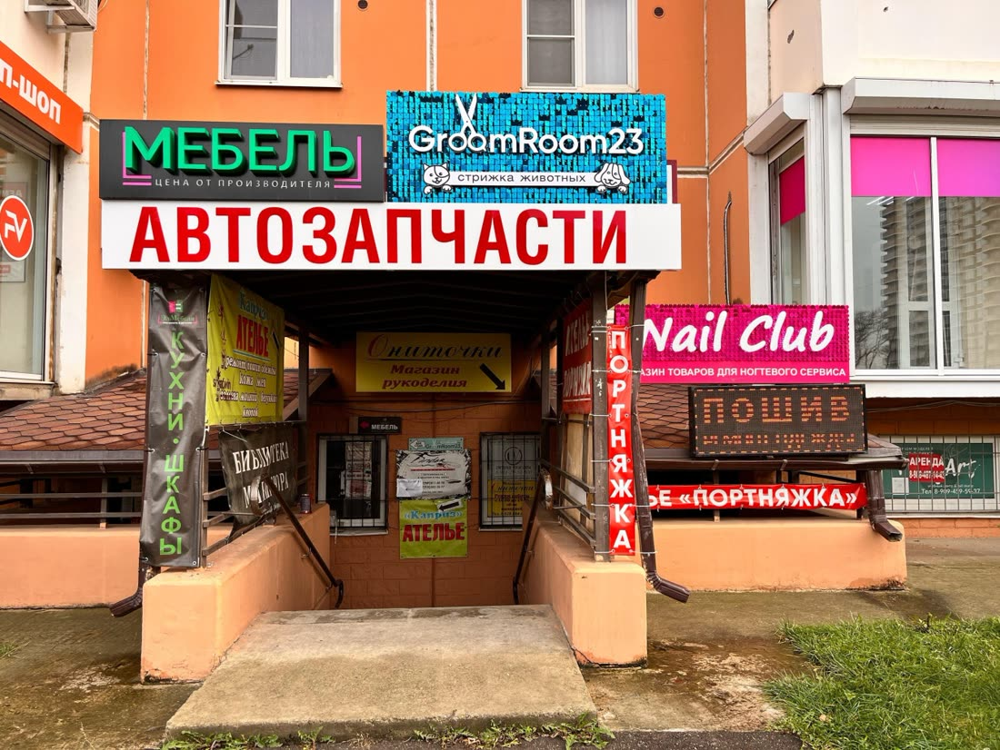

| 2ГИС | Яндекс Карты | Табличка на двери | |
|---|---|---|---|
| Рейтинг | 4,9 · 94 оценки | 4,8 · 19 оценок | |
| Карточка подтверждена | Плашка «давно не обновляла данные» | Нет, «Вы владелец?» | |
| Пн–Пт | 9:00–19:00 | 9:00–10:00 | 9:00–19:00 |
| Сб / Вс | 9:00–18:00 / 9:00–15:00 | 10:00–18:00 / 10:00–15:00 | 10:00–18:00 / 10:00–15:00 |
| Телефон | +7 989 263-69-80 | +7 988 509-59-10 | …509 59 10 |
| Главная рубрика | Швейные ателье | Меховое ателье | |
| Цены | Нет | Нет | |
| Ответы на отзывы | 0 из 48 | Нельзя, карточка не ваша | |
| Сайт | Нет | Нет |
Что нашёл
Яндекс показывает «Закрыто» почти весь рабочий день важно
В графике Яндекс Карт с понедельника по пятницу указано 09:00–10:00. Я смотрел карточку в среду в 14:35, она показывала «Закрыто до завтра». Так будет каждый будний день с 10 утра до вечера. Человек, который ищет «ателье рядом», видит, что вы закрыты, и идёт к соседям, которые «Открыто до 20:00».
Часы и телефон разные в 2ГИС, Яндексе и на двери важно
На табличке у двери: суббота и воскресенье с 10:00. В 2ГИС: с 9:00. Кто придёт в субботу в 9:15 по карте, упрётся в закрытую дверь. Телефоны тоже разные: в 2ГИС +7 989 263-69-80, в Яндексе +7 988 509-59-10, и на табличке номер тоже заканчивается на 509-59-10. Если один из номеров уже не ваш, часть звонков просто теряется.

Табличка на двери, фото из карточки 2ГИСКарточка в Яндексе ничья и записана как «меховое ателье» важно
На карточке висит «Вы владелец этой организации?». Пока она не подтверждена, вы не можете поправить часы, ответить на отзывы, добавить цены и фото. Главная рубрика там «Меховое ателье», а по ремонту одежды вас показывают хуже. Рядом Яндекс рекомендует «Ателье по ремонту и пошиву одежды» (5,0, 80 оценок, акция «Подшить брюки от 800 рублей») и «Новый образ» (5,0, 165 оценок).
2ГИС пишет каждому: «Компания давно не обновляла данные» важно
Эту строку видит каждый, кто открывает карточку, а в разделе «Актуальность данных» стоит «не подтверждена». У соседних ателье в том же списке написано «Данные актуальны». Выбирая между ними, человек идёт туда, где написано, что всё в порядке.
85 отзывов, ни одного ответа, даже на единственный злой заметно
Люди пишут «самое лучшее ателье на районе», «спасение для вашей одежды», «золотые руки». Ни на один из 48 последних отзывов в 2ГИС нет ответа. Единственный отзыв с одной звездой (ноябрь 2024, про «дорого» и квитанции) тоже висит без ответа, и его читают все, кто листает отзывы.
Нет цен, и за вас на вопросы отвечает робот заметно
Вкладка «Цены» в 2ГИС пустая. В блоке «Вопросы о месте» висят «От чего зависит цена работ?», «Есть ли срочный ремонт?», «Есть ли примерка при ремонте?», а отвечает на них ИИ-помощник 2ГИС, не вы. Конкурент в Яндексе прямо в рекомендациях пишет «Подшить брюки от 800 рублей».
На вашей карточке рекламируется другое ателье заметно
В блоке «Похожие организации» прямо под вашим адресом стоит реклама: «Ателье по пошиву и ремонту одежды. Швейные работы любой сложности. Быстро и качественно» с кнопкой «Позвонить». Ниже ещё четыре ателье и магазина тканей.
У входа вывески другого ателье заметнее ваших просто
Вход общий, спуск под вывеской «Автозапчасти». Слева на этом спуске два жёлтых баннера «Каприз. Ателье: ремонт, пошив одежды, замена молнии». Ваша вывеска «Портняжка» справа, узкая и вертикальная. В 2ГИС из 41 фото снаружи только 3 и ни одного фото внутри, поэтому новый клиент легко зайдёт не в ту дверь.

В Яндексе в 4 раза меньше оценок, чем у соседей просто
У вас в Яндексе 19 оценок, у ателье из рекомендаций 80 и 165. В 2ГИС у вас 94, то есть довольных клиентов хватает, их просто никто не просит оценить вас в Яндексе.
Что предлагаю
Беру на себя всё из списка, от вас нужно только подтвердить карточки по коду из СМС.
- Подтвердить карточки в 2ГИС и Яндексе, выставить одни часы, один телефон, правильные рубрики и цены
- Ответить на все отзывы и дальше отвечать на новые
- Поставить хорошие фото: вход, коридор, дверь, примерочная, работы
- Сайт ателье со ссылкой из обеих карточек: вот концепт
- Раз в месяц отчёт: сколько людей посмотрели карточку, позвонили и построили маршрут
Разбор бесплатный. Стоимость работ обсудим, она небольшая.